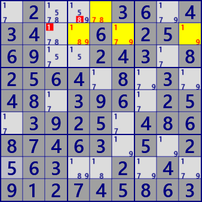

X-Chain
X-Chain is an analysis algorithm using Locked which occurs when concatenating strong and weak links.
Set the focused digit X, start with a strong link from the start cell,
and connect strong and weak links alternately to make a series.
If the destination cell of the weak link belongs to the same house as the start cell,
X can be excluded from the candidate of this cell.
A strong link is also a weak link, and the link sequence may be a strong-strong-strong link.
Sample of X-Chain
 X-Chain #1
X-Chain #1Stem : r4c4
Eliminated : r45c6

X-Chain #7
Stem : r7c6
Eliminated : r1c6 r8c4
(in GNPX) paste the next 81 digits onto the grid and solve with /Solve/MultiSolve/
..2..56.145..92....6.41.9.2..5.7....8.......7....2.3..1.3.46.2....95..735.92..8..
...4..296.79..2..3.42..351.4.......2.....1.5..21.54..92.8...9..9.4.3...116.9.5.4.
Link system algorithm Basic explanation
Sudoku has restrictions on rows, columns, and blocks. These are called "House". The truth of the digit that enter one house is called a "Link". When there are two candidates, it is called "Strong Link", and when there are three or more, it is called "Weak Link".
A link conveys the truth of a number. In Strong Link, if the digit in one cell is true, the other is false. Conversely, if one is false, the other is true.
In Weak Link, if the digit in one cell is true, the other is false. However, when one is determined to be false, the remaining cells are not determined to be true or false.
strong link:
If ★ is true,the other is false.
If ★ is false,the other is true.
weak link:
If ★ is true,the others are false.
If ★ is false,the others are not clear.
Alternately connecting Strong Link and Weak Link is called "Chain". Weak link in Chain can also be Strong Link. If the first cell in the chain is "false", then all the cells that make up Chain are true or false. In the figure below, check how the truth is transmitted when the ★cell is false.
Strong link and Weak link are connected.
If ★ is false,
the truth of all ●〇 are determined.
(●:true 〇:false)
X-Chain is the most basic Link algorithm. Sudoku also has other types of links. For example, multiple candidate digits in one cell, ALS, AIC.